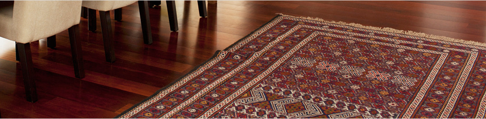

售后服务

售后服务
我公司将为您提供全面的高品质的服务。产品质量从原材料、工艺、质检等每一环节严格执行国家标准和行业标准，以确保品质优异及您的需求;提供专业的地毯铺装服务;在产品整个使用过程中，我公司将协助您正确使用、维护、保养、清洗地毯;全方位的服务将彻底免除您的后顾之忧，令产品发挥最大的使用价值。
为了更好的体现我们卓著的信誉，
我们向您作出如下承诺：
产品出售三年保修，为您建立《售后服务档案》
产品出售三个月内，派专人上门访问，并定期进行电话拜访，在许可的情况下到现场察看，以及时了解和解决您的要求和问题
产品需维修服务，可直接打电话到本公司，公司将在24小时内上门修复
公司所派出维修人员都是技术全面的专业人员或技师，熟悉本公司所售地毯的性能，具有能够单独处理维修事务的能力
终身免费维修
本公司在您需要时为您提供地毯使用、维护、清洗指导等一系列服务
其他服务承诺： 安装验收交付使用一个月后，进行一次全面检修，在规定的三年保修期内我公司每半年进行一次检查，直到保修期满为止;保修期满后，我们仍以一贯作风将为产品提供终身售后服务
触屏版
|
电脑版
京ICP备11048675号-1 Copyright © 2004-2013 www.hongyedt.com ALL Rights Reserved
公司简介
企业荣誉
厂房设备
技术中心
地毯资讯
产品展示
经典案例
工程部
设计部
售后服务
联系我们